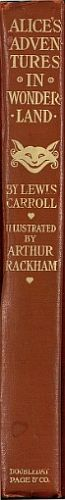

| 19002 | (Black and White illustrations) |
| 19033 | (Illustrations in Color and Black and White) |
| 28885 | (Illustrations in Color and Black and White) |
|  |
|
| To face page | |
|
Alice
|
Frontispiece |
|
The Pool of Tears
|
22 |
|
They all crowded round it panting and asking, "But who has won?"
|
28 |
|
"Why, Mary Ann, what are you doing out here?"
|
36 |
|
Advice from a Caterpillar
|
50 |
|
An unusually large saucepan flew close by it, and very nearly carried it off
|
70 |
|
It grunted again so violently that she looked down into its face in some alarm
|
74 |
|
A Mad Tea-Party
|
84 |
|
The Queen turned angrily away from him and said to the Knave, "Turn them over"
|
100 |
|
The Queen never left off quarrelling with the other players, and shouting "Off with his head!" or, "Off with her head!"
|
116 |
|
The Mock Turtle drew a long breath and said, "That's very curious"
|
132 |
|
Who stole the Tarts?
|
140 |
|
At this the whole pack rose up into the air, and came flying down upon her
|
158 |